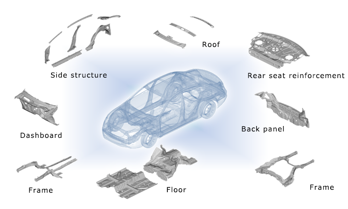

Work Projects
Tesla Projects
Cross Die Project
- Studied how simulation results accurately coincide with actual panels from stamping.
- Prepared X-die for this study and conducted the experiments to create the panels for comparison.
- Studied thinning, draw in and wrinkles and made comparison between actual panels and simulation results.
Current Research Projects
- Researching on ways to accurately predict springback on high Strength Steels and aluminum panels by collaborating with AutoForm.

GNAC Projects
Crash Analysis and Structural Analysis
- Performing crash analysis on Acura MDX 2020 to study how different door ring designs affect the crashworthiness of the vehicle using ANSA.
- Studying the front crash, SICE (Side Impact Crash Evaluation) analysis, pole side crash and roof crush using META software.
- Created manuals for HyperWorks structural analysis studies.
- Represented GNAC in teaching of students from mother company, G-TEKT regarding our crash analysis process.
Formability Analysis
- Performed formability studies on past projects- 2017 Honda ridgeline, 2017 Acura TLX, 2017 Honda Odyssey, 2018 Acura RDX.
- Assisted in the creation of process sheets for parts quotation as required
Skills
- GitHub
- CATIA
- NX/Unigraphics
- AutoForm
- JStamp/NV
- Forming Suite
- ANSA/META
- HyperWorks
- Pro/E/Creo
- PTC PDMLink Windchill
- Citrix Receiver
- Infinity QS
- LabVIEW
- COMSOL
- SolidWorks
- MATLAB
- AutoCAD
- Abaqus
- Microsoft Office Suite
- LaTex
- TinyCAD
- Plex
- Geometric Dimensioning and Tolerancing
- Virtual Reality/ Augmented Reality